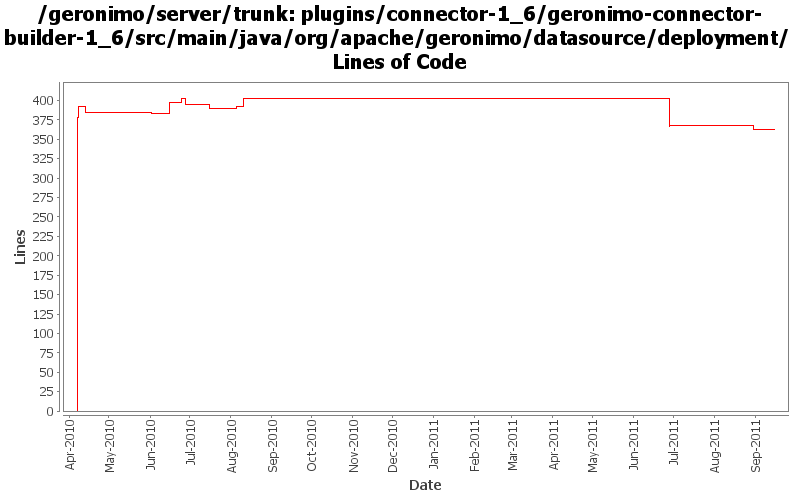

[root]/plugins/connector-1_6/geronimo-connector-builder-1_6/src/main/java/org/apache/geronimo/datasource/deployment

| Author | Changes | Lines of Code | Lines per Change |
|---|---|---|---|
| Totals | 20 (100.0%) | 658 (100.0%) | 32.9 |
| gawor | 7 (35.0%) | 416 (63.2%) | 59.4 |
| djencks | 10 (50.0%) | 187 (28.4%) | 18.7 |
| xuhaihong | 3 (15.0%) | 55 (8.4%) | 18.3 |
Update codes due to getInjectionTargets return value type changed to Set
53 lines of code changed in 1 file:
The datasource url property is not configured
0 lines of code changed in 1 file:
GERONIMO-6022 Support use the @Resource(name="java:global/env/abc") for environment entry injection
2 lines of code changed in 1 file:
GERONIMO-5066 Use naming Reference to set up Datasources and use them to get global scope datasources from server to app client
27 lines of code changed in 1 file:
XBEAN-162 update to genericed xbean-finder apis
3 lines of code changed in 1 file:
ensure DataSourceBuilder executes before ResourceRefBuilder and it creates unique GBeans
13 lines of code changed in 1 file:
jndi normalization fixes
1 lines of code changed in 1 file:
GERONIMO-5066 Fix a lot of problems with jndi including wrong finders and inconsistent adding of injections
6 lines of code changed in 1 file:
yet another regression
1 lines of code changed in 1 file:
GERONIMO-5445 use osgi jndi links for datasource annotations
3 lines of code changed in 1 file:
use the classfinder from the module that knows what the relevant classes are when looking for DataSource annotations
18 lines of code changed in 1 file:
fix translation between Connection flags and jaxb tree isolation level
2 lines of code changed in 1 file:
GERONIMO-5190 use openejb-jee jaxb tree for spec dds
110 lines of code changed in 1 file:
GERONIMO-5380 Allow exposing gbeans as osgi services (or service factories). Replace the specialized code in connector with this new generic code. This is not serialziation compatible with old GBeanInfo and GBeanData
14 lines of code changed in 1 file:
GERONIMO-5025, GERONIMO-5117. Make jndi supported directly by Modules and straighten out which contexts are shared when.
3 lines of code changed in 1 file:
XBEAN-148 use new xbean-bundleutils
1 lines of code changed in 1 file:
GERONIMO-5232: Support @Resource.lookup for env-entry, resource-ref, resource-env-ref, and message-destination-ref. Also fixes java:app jndi namespace
1 lines of code changed in 1 file:
GERONIMO-5113: Support (or at least try to support) transaction isolation level & url properties
15 lines of code changed in 1 file:
GERONIMO-5113: Do little string trimming just in case
8 lines of code changed in 1 file:
GERONIMO-5113: Mostly complete support for @DataSourceDefinition(s) annotations
377 lines of code changed in 1 file: